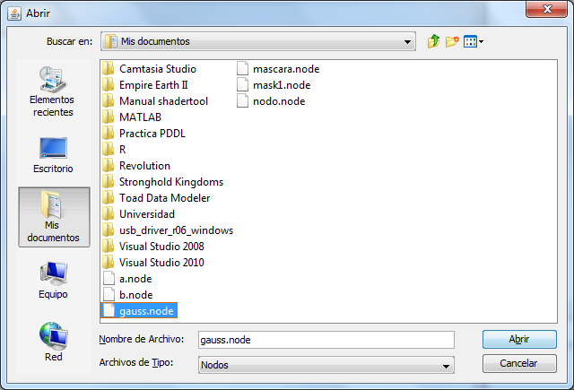

Añadir y eliminar nodos
Añadir un nodo
Para añadir un nodo hay que arrastrarlo desde el árbol de nodos hasta el editor.
Para añadir un nodo exportado anteriormente hay que pulsar en el botón "Importar" ().
Se abrirá una nueva ventana donde se podrá elegir el nodo a importar. Los nodos exportados tienen extensión ".node".

Una vez seleccionado el nodo a importar, éste se añadirá al árbol de nodos, en una nueva carpeta llamada "Importados".
También es posible añadir nodos importados arrastrándolos desde su ubicación hasta el editor o el árbol de nodos. Si
se arrastra al árbol de nodos se añadirá a la carpeta "Importados", si se arrastra al editor se añadirá al mismo, pero
no al árbol de nodos.
Eliminar un nodo
Se puede eliminar un nodo de dos formas: seleccionándolo (haciendo click izquierdo sobre él) y pulsando el botón "Suprimir" o
abriendo su menú el opciones (haciendo click derecho sobre él) y seleccionando la opción "Eliminar".